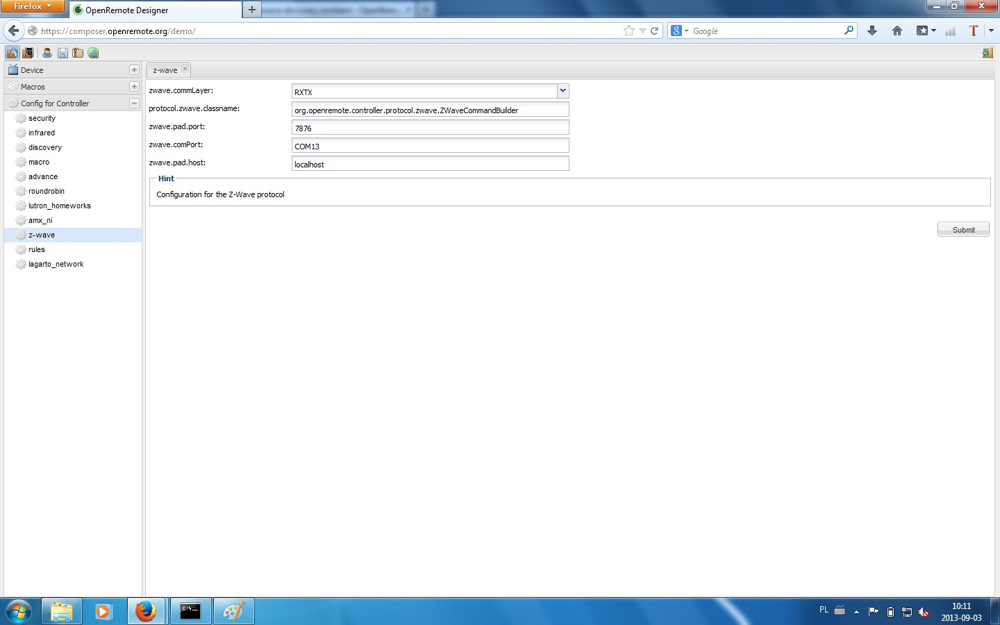

Dears,
My name is Piotr and I am new user of openremote.
I have Aeon S2, already paired with dimmer. I have installed everything as requested:
1. commLayer set to RXTX, com port to COM4
2. log4j.appender.zwave-file.Threshold set to DEBUG
3. empty panel created.
When I sync controller it says "sync complete" and I get:
--------------------------------------------------------------------
UNDEPLOYING CURRENT CONTROLLER RUNTIME...
--------------------------------------------------------------------
INFO 2013-09-02 23:41:32,752 : Stopped event processor : Drools Rule Engine
INFO 2013-09-02 23:41:32,767 : Stopped event processor : RRD4J Data Logger
INFO 2013-09-02 23:41:32,767 : Stopped event processor : EmonCMS Data Logger
INFO 2013-09-02 23:41:32,767 : Shutdown complete.
INFO 2013-09-02 23:41:32,767 :
--------------------------------------------------------------------
DEPLOYING NEW CONTROLLER RUNTIME...
--------------------------------------------------------------------
INFO 2013-09-02 23:41:32,814 : No rule definitions found in 'C:\openremote\webapps\controller\rules'
.
INFO 2013-09-02 23:41:32,814 : Initialized event processor : Drools Rule Engine
INFO 2013-09-02 23:41:32,814 : Initialized event processor : RRD4J Data Logger
INFO 2013-09-02 23:41:32,814 : Initialized event processor : EmonCMS Data Logger
INFO 2013-09-02 23:41:32,830 : Startup complete.
but zwave.log and zwave-debug.log are empty
can anybody advice what is wrong?
cheers
Piotrek
{kind=link}
|
Cześć Piotrek, When you paired the dimmer with Aeon controller then you should see in the zwave log file (logs/zwave/zwave.log) at least these entries DEBUG 2013-09-01 16:02:23,908 (Z-Wave): Node id: 1 discovered Without them you don't have communication between openremote and z-wave stick. Hope this helps. Pozdrowawiam, |
|
Thanks Michal The problem is that this file is absolutely empty. I've tried wit another COM port - no result (config screen attached) I have just installed z-tool from homeseer just to verify my hardware and it works perfectly - I can turn off/on and dimm. Maybe I will try to install it on another PC...  cheers |
|
Do you have the zwave.jar in folder webapps/controller/WEB-INF/lib ? |
|
yes created on 17.06.2013 12:41:12 |
|
Any errors in boot.log ? |
|
Hi Marcus In the log there is nothing strange I guess. After successful (at least program says successful) sync I get this ======================================== C:\openremote\bin>openremote run 2013-09-03 17:51:28 org.apache.coyote.http11.Http11Protocol init -------------------------------------------------------------------- DEPLOYING NEW CONTROLLER RUNTIME... -------------------------------------------------------------------- ***************************************************************** The license restrictions Sigma Designs places on Z-Wave To test Z-Wave, download a freely available binary from ***************************************************************** INFO 2013-09-03 17:51:38,704 : No rule definitions found in 'C:\openremote\webapps\controller\rules' -------------------------------------------------------------------- UNDEPLOYING CURRENT CONTROLLER RUNTIME... -------------------------------------------------------------------- INFO 2013-09-03 17:52:37,688 : Stopped event processor : Drools Rule Engine -------------------------------------------------------------------- DEPLOYING NEW CONTROLLER RUNTIME... -------------------------------------------------------------------- INFO 2013-09-03 17:52:37,766 : No rule definitions found in 'C:\openremote\webapps\controller\rules' ============================================ INFO 2013-09-03 17:51:38,360 : -------------------------------------------------------------------- DEPLOYING NEW CONTROLLER RUNTIME... -------------------------------------------------------------------- INFO 2013-09-03 17:51:38,704 : No rule definitions found in 'C:\openremote\webapps\controller\rules'. -------------------------------------------------------------------- UNDEPLOYING CURRENT CONTROLLER RUNTIME... -------------------------------------------------------------------- INFO 2013-09-03 17:52:37,688 : Stopped event processor : Drools Rule Engine -------------------------------------------------------------------- DEPLOYING NEW CONTROLLER RUNTIME... -------------------------------------------------------------------- INFO 2013-09-03 17:52:37,766 : No rule definitions found in 'C:\openremote\webapps\controller\rules'. |
|
You have to replace the zwave.jar with the real one. |
|
Thanks Marcus - I see light in the tunnel WARNING: RXTX Version mismatch |
|
NoSuchPortException means that COM13 is not available. |